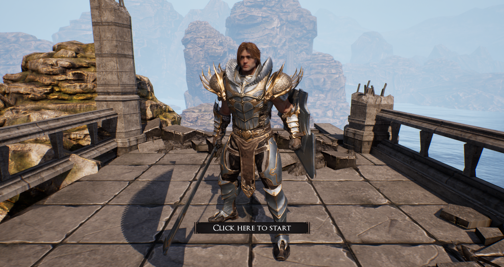
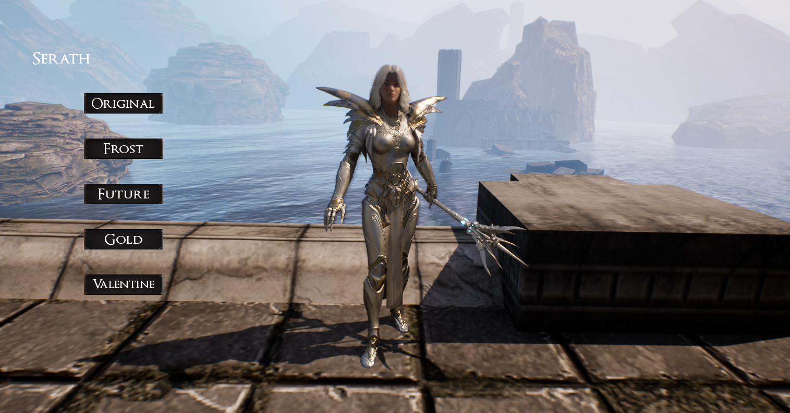
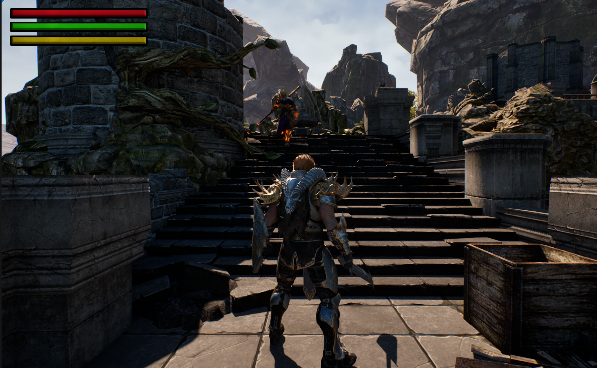
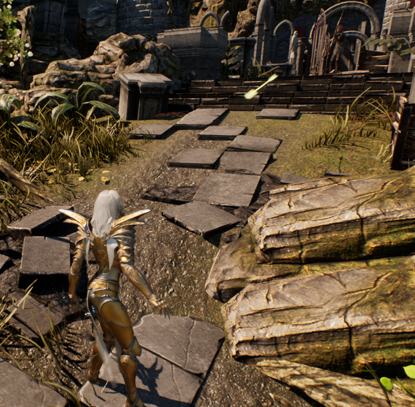
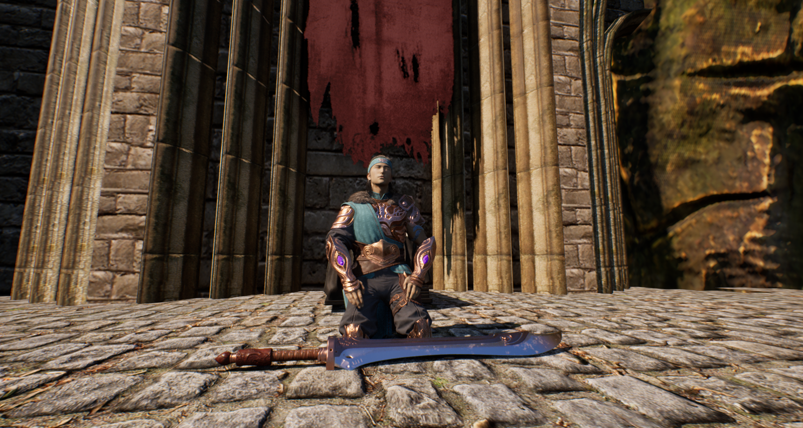

Click to Enlarge
Project description
Dark Alma is a souls like university project that myself and another worked on and to be what I consider the best work that I have made out of uni. The aim of the game is simple, you start at the base of a ruined temple, you must move forward defeating a few enemies along the way and then the main section of the game is a 2 phase boss fight with souls like inspiration and feel.
This game includes:
- Souls like combat
- Two grunt enemies including a ranged and melee type.
- An advanced two stage boss that uses behaviour trees to mimic a souls boss
- A healing power
- Controller Support
Project Contribution
2024
AI, Player and Cutscenes Developer
- What I learned:
- Indepth Knowledge of Unreal Engines blueprints.
- More advanced behaviour tree systems.
- Animation bone structure.
- Animation Slot structures for specific body manipulation.
- Animation keys
- Level Sequences (Cutscenes)
- How to use Unreal Engine properly with Github
- Collision Profiles in Unreal Engine
- Advanced Hit detection.
- How to raycast
- What I contributed:
- Developed a melee enemy that chases the player and attacks with a staff.
- Developed a ranged enemy that shoots the player with a bow and runs away if the player gets too close.
- Developed a two stage boss fight, the first has alongside its sword swings:
- A circle AOE sword slash.
- A running sword slam AOE.
- A fireball attack where the boss will run away and then shoot an random number of slow moving fireballs from their blade.
- The Second stage has alongside its basic hammer strikes:
- An AOE that slams the ground a random number of times up until 5, the radius increasing with each strike.
- A large fast moving fireball.
- A large magic hand grab attack that siphons the players health if hits.
- A telegraphed AOE, a point spawns on the player and then a second later a magic AOE strikes from the sky.
- Developed a cutscene to introduce the boss
- Set up the controls for the player character
- Developed a powerup for the player to heal themselves
- Lock on system
Bio
This project initally started due to the creative freedom we were given for this specific trimester and thanks to my love of the Dark Souls series, I knew I wanted to try to make something. Along with my Partner Thomas, we developed this game which definitly had its share of trials to overcome in development however it was also my most successful University project and I loved working on it so much.
This was among the final few projects I worked on at Uni which I started with no Knowledge of programming, up until this point I was struggling quite a lot wrapping my head around the concepts, however something just clicked in my brain while working on Dark Alma and I felt clarity with the systems, functions, syntax like never before. I was able to use Unreal Engine effectively.
Making the boss was the main passion of mine for this, I put almost all my time and effort into making the boss and thankfully I finished quite a while before deadline so I had a chance to make some basic enemies which was completely last minute as it was originally suppose to just be a boss battle only. Everything turned out quite well. There is a few bugs here and there, some audio glitches however functionally the project works so well.
One of the biggest challenges we had to deal with was the project size, we were not sparing on downloading high quality assets and map packs and I believe that at the peak of the project it was around 40gb. In the end though we finally got it down to 5ish gb, which is still quite a lot. Even so the project scored a high grade and the lectureres loved it a lot, it even is showcased in advertisements for the University that I see on youtube or other sites.